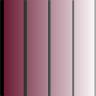

|  | Glass
Shutters secondary glazing for sash windows |
Glass
Shutters on |
| Enjoy the
luxury of Glass Shutters, an
innovative secondary glazing that preserves
the appearance of your traditional sash
windows. The glass is toughened and has a coating which reflects heat back into the room while still letting in heat from the sun. The frameless panels are easily opened to allow access to the window. By choosing an appropriate style, the panel divisions can be made to coincide with the glazing bars. This minimizes the visual impact from inside while making them virtually invisible from the outside. To avoid condensation, the cavity between the glass shutters and the original glazing should be vented to the outside. This can be achieved by installing a trickle ventilator in the top rail of the sash window. Styles Available
Please note that, depending on your location and property type, Glass Shutters may be subject to Planning Permission. For information on manufacturing, supply and Registered Designs please contact: The
Glass Shutter Company Limited
Company Registration No.: NI606792 Copyright © 2013, 2014,
2015 Donald G Gray
|